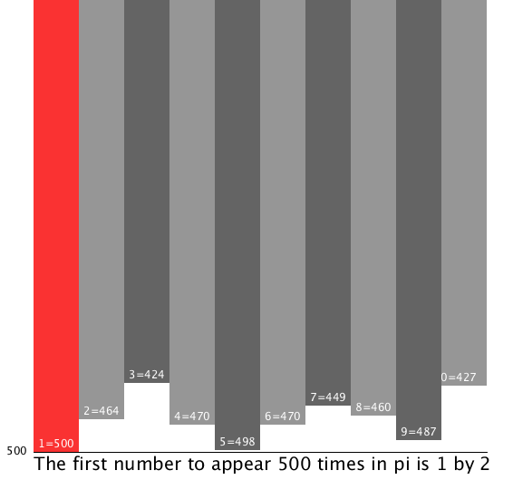

Taking random to the next level! Refresh for new results...
Example of normal Java random:
Distribution of 0-9 in Pi, the first number to show up 500 times is one. Only image posted as web version doesn't support big integers. Thanks to Rosettacode for Pi code:

Distribution of 0-9 in Pi,the first number to show up 1000 times is five. Talk about a hardware benchmark test...

Everyone is a programmer. We all give instruction to someone or something. I have been interested in software development since grade school.
Check out the binary learning tool!